🎯 Stage 0 サンプルOHLCプロット
📊 生成統計
- 総プロット数: 15
- 生成日時: 2025-07-05 15:00:54
- 目的: OHLCデータの目視確認・品質チェック
📈 M5 Time Frame
Sample #1
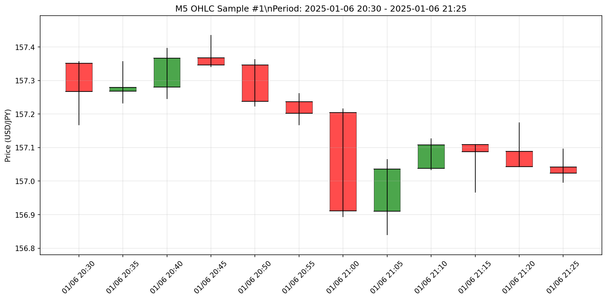
ファイル: m5_sample_1.png
Sample #2
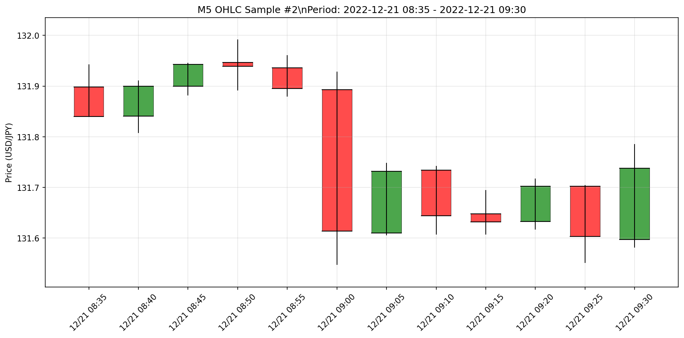
ファイル: m5_sample_2.png
Sample #3
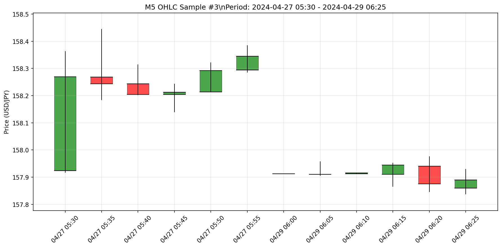
ファイル: m5_sample_3.png
📈 M15 Time Frame
Sample #1
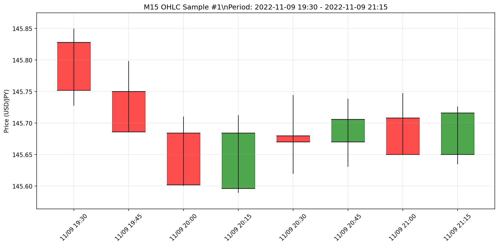
ファイル: m15_sample_1.png
Sample #2
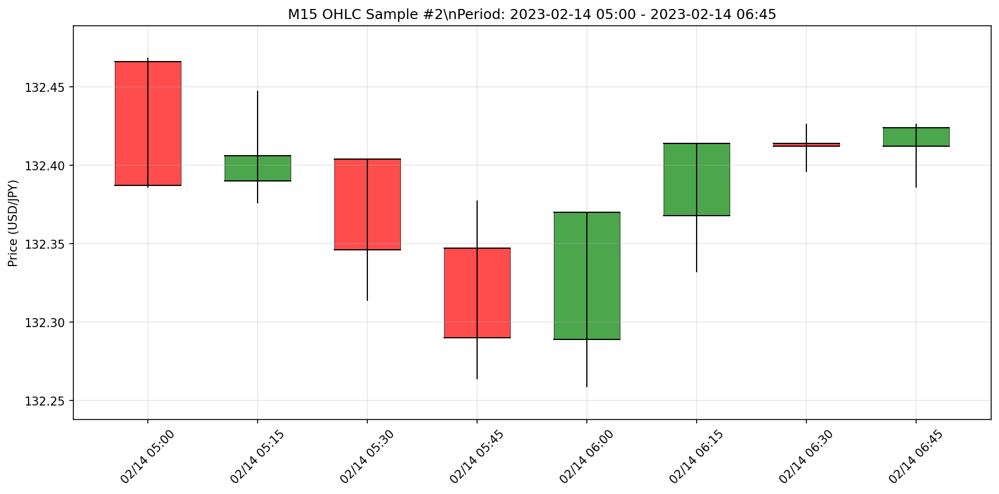
ファイル: m15_sample_2.png
Sample #3
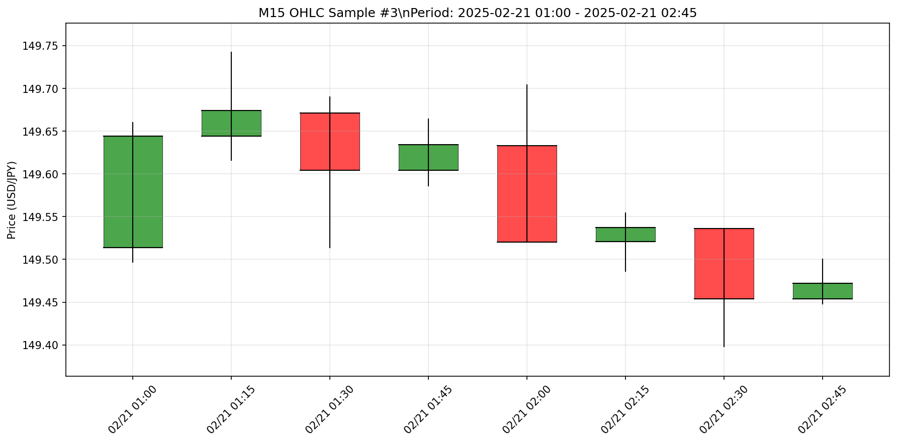
ファイル: m15_sample_3.png
📈 H1 Time Frame
Sample #1
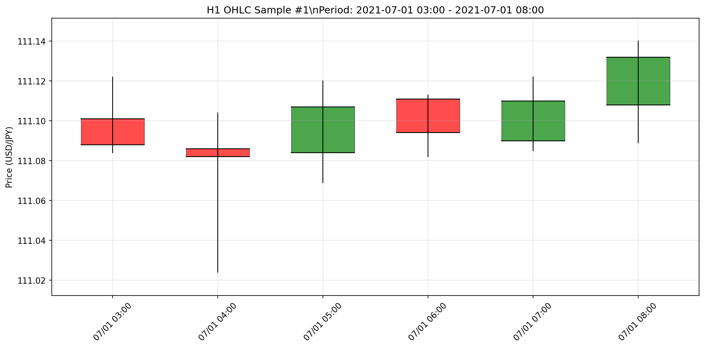
ファイル: h1_sample_1.png
Sample #2
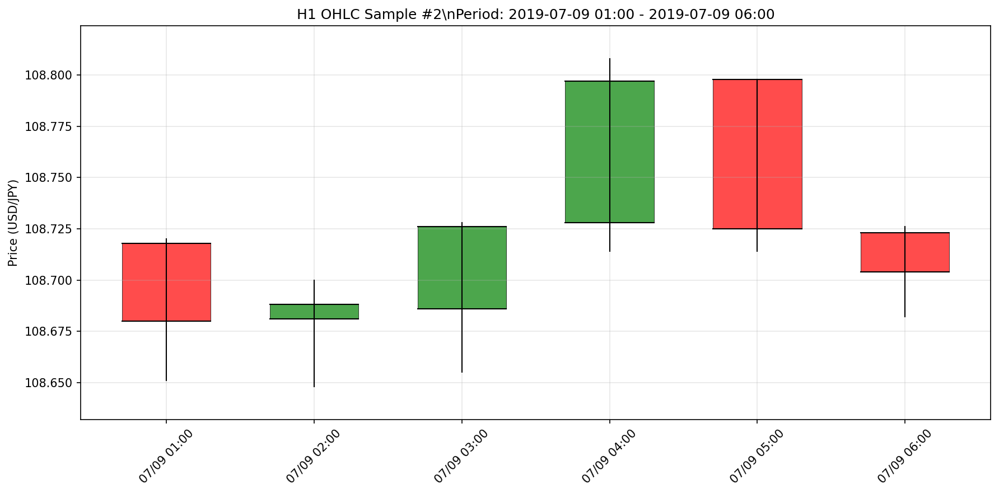
ファイル: h1_sample_2.png
Sample #3
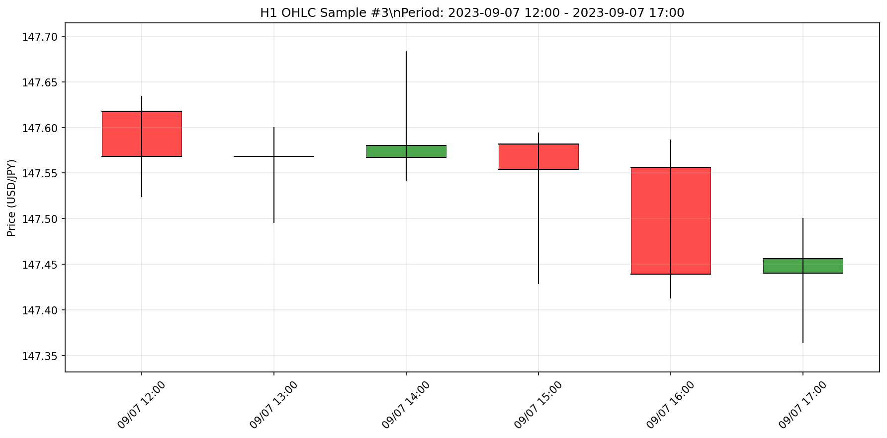
ファイル: h1_sample_3.png
📈 H4 Time Frame
Sample #1
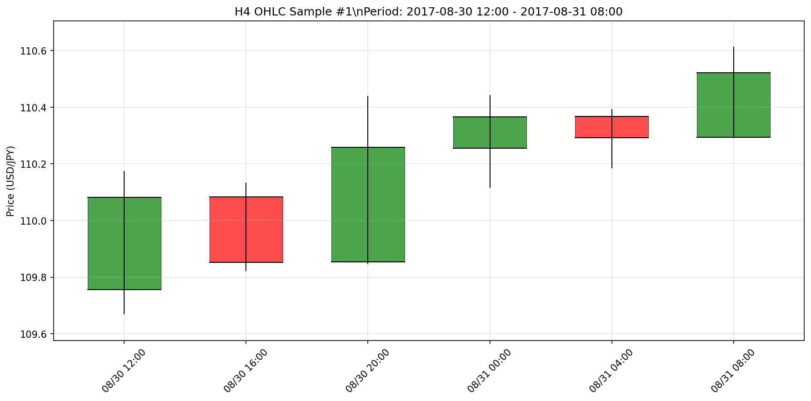
ファイル: h4_sample_1.png
Sample #2
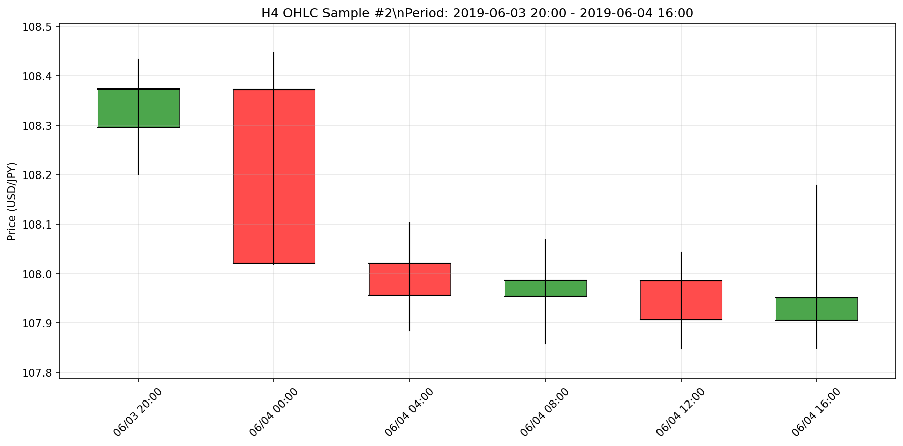
ファイル: h4_sample_2.png
Sample #3
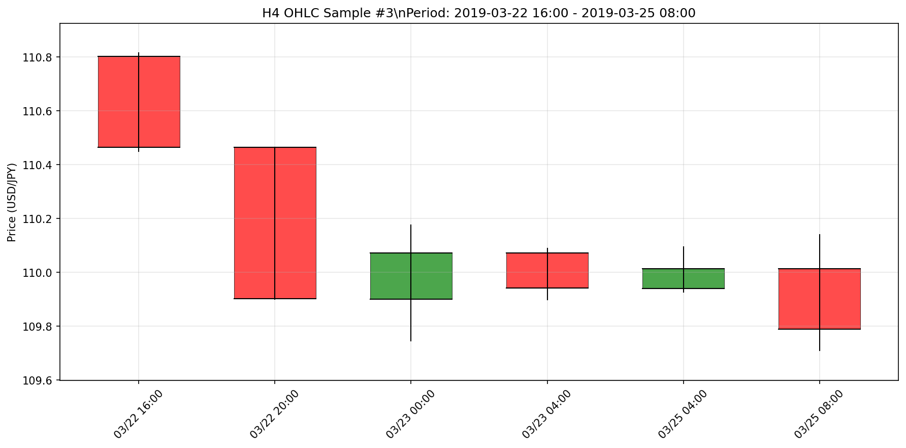
ファイル: h4_sample_3.png
📈 D Time Frame
Sample #1
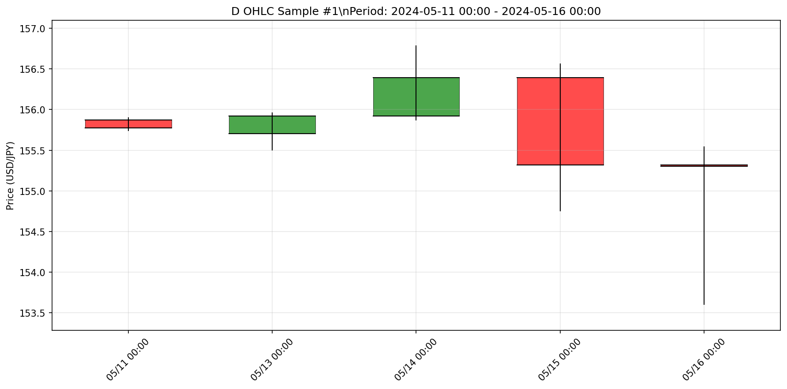
ファイル: d_sample_1.png
Sample #2
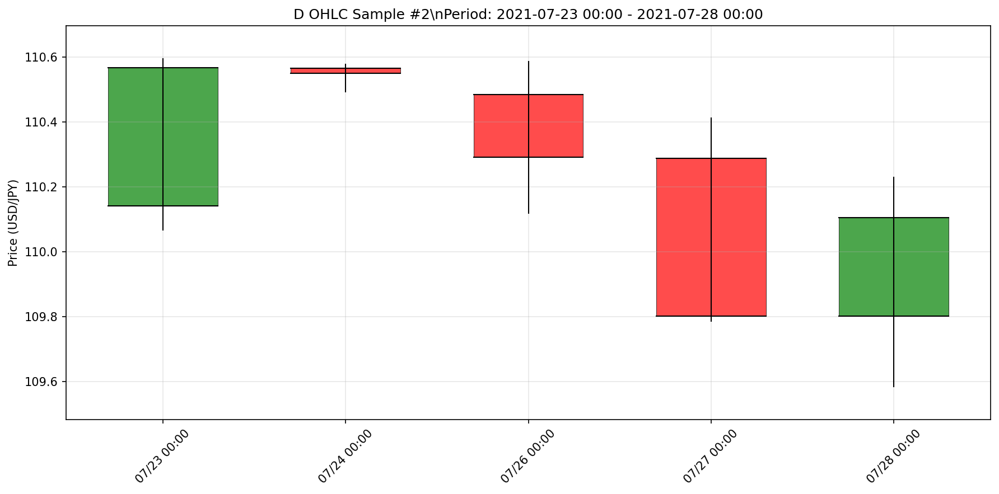
ファイル: d_sample_2.png
Sample #3
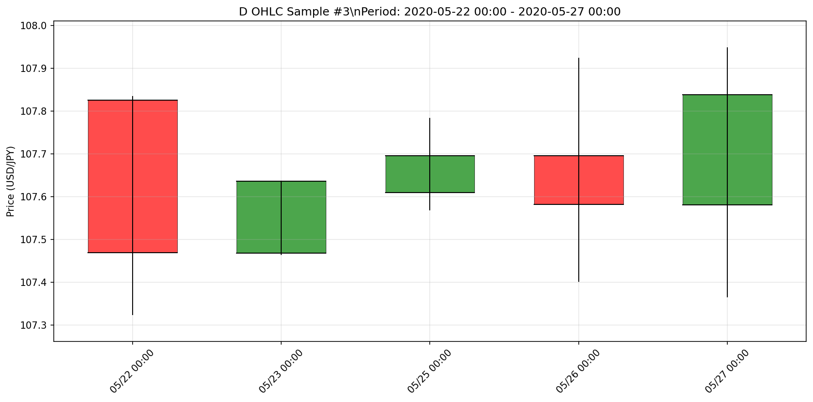
ファイル: d_sample_3.png
🔍 確認ポイント
- OHLC価格の論理的整合性（Low ≤ Open,Close ≤ High）
- 価格の連続性と自然な変動
- 異常値やスパイクの有無
- 時系列の一貫性